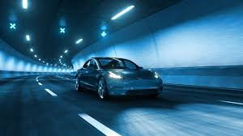

At Tesla, we have set ourselves the goal of always developing and creating products that will lead to real progress and a better world. That is why I am delighted to announce our newest discovery related to battery technology- a milestone that will fast-track the electric mobility future and draw us closer to a sustainable energy future for all.
However, the invention of the car is about creating a better car and striving to create a better world. By mass-producing electric vehicles, we can make them more affordable and accessible, thus pushing the world toward green transportation, a fossil-fuel-free world, and, eventually, reducing the impacts of climate change

Image of Tesla electric vehicles on the road
I could talk about Tesla's launch when their electric vehicles were considered not more than a marginal anomaly, and none of their fleet EV projects appeared on the horizon. However, we were compelled to ignore the criticism of those who did not support our idea. The belief that innovation was our greatest quality was the motto that kept us moving forward, and with that mindset and unwavering determination toward sustainability, we would be the leaders of the future.
Furthermore, today's great battery technology will make that dream a reality. We are not talking about just vehicles being assembled—we believe in a new era! In our society, we are trying out a new paradigm of a healthy, clean, and sustainable earth for the generations to come, not only for us but also for our children and their children.
https://www.youtube.com/watch?v=1X_mvfmaeXc
Despite that, it is the first part of the whole cycle. We are approaching the realm of the unknown and staying within the set boundaries of technology. Conversely, we will need governments, private businesses, and communities worldwide to work together. However, we humans cannot fight the climate problem alone. The future will not be ours alone. Today and tomorrow, we must all cooperate, and each of us must begin with a lifestyle that uses only the Earth's resources that nature can renew. It must be a lifestyle that saves the world for our future generations.
Subsequently, have a first-hand experience with us since you will be part of the musical journey. Let us begin the warfare at this moment. Together, we have the power to create a destination towards sustainability, one step at a time, starting with rechargeable batteries. David Harness
{kind=link}